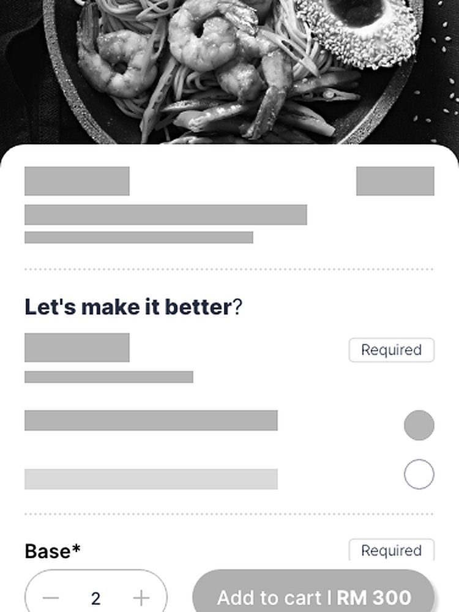
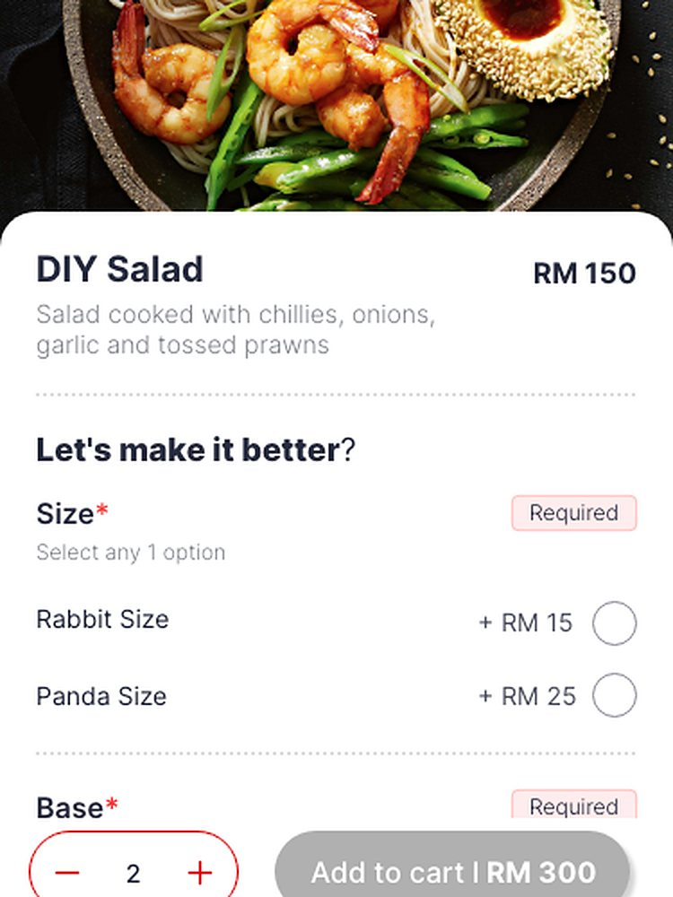

01
One page, not a chain of pop-ups
Tap a customisable dish on the menu and you land on one page. The dish photo and price sit on top, then “Let's make it better?”, then every section in order.
The first wireframes were there to set this direction with the team and walk the PM through the problems we were solving.
- Tried
- The old flow: a pop-up per step with Back and Next
- Dropped
- Pop-ups for customization
- Why
- People lost track when one screen led to another

Wireframe One scrolling page

Final Required sections first